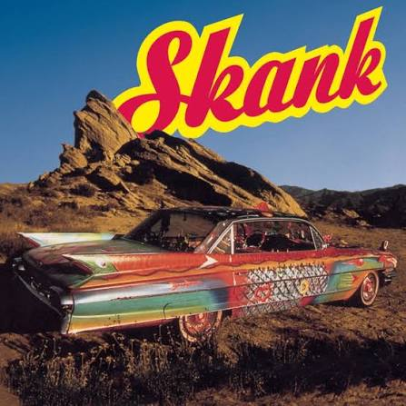
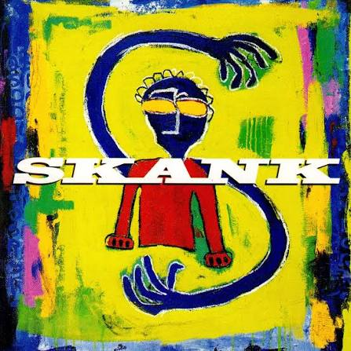
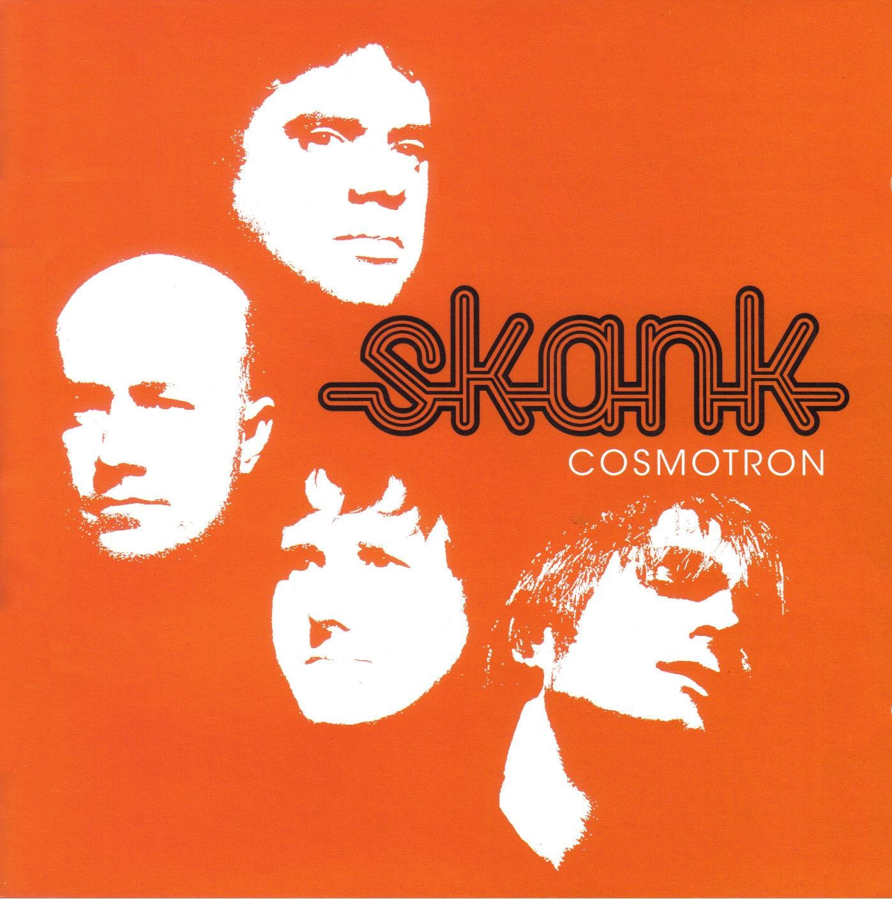
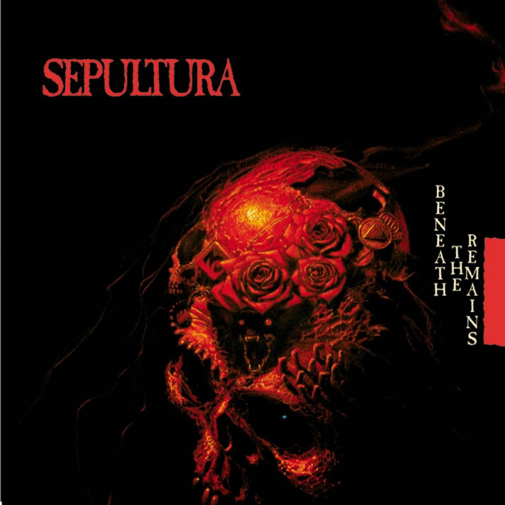
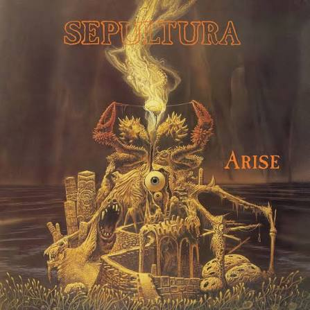
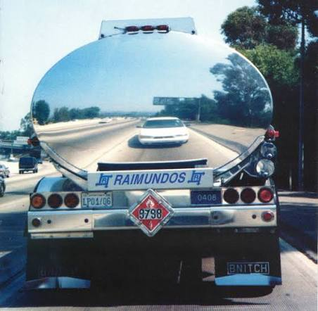
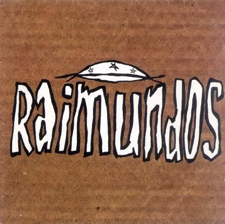
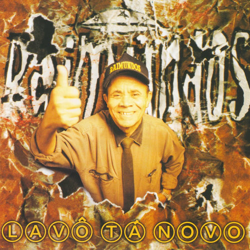

- Álbuns
- Gêneros
- Artistas
- Novidades
últimos cadastros do site
8 de 93

Novo
Skank · 1994
Cadastrado em 11/11

Novo
Skank · 1998
Cadastrado em 11/11

Novo
Skank · 2003
Cadastrado em 11/11

Novo
Sepultura · 1989
Cadastrado em 11/11

Sepultura · 1991
Cadastrado em 11/11
Sepultura · 1996
Cadastrado em 11/11

Raimundos · 1997
Cadastrado em 11/11

Raimundos · 1994
Cadastrado em 11/11
4 de 34
